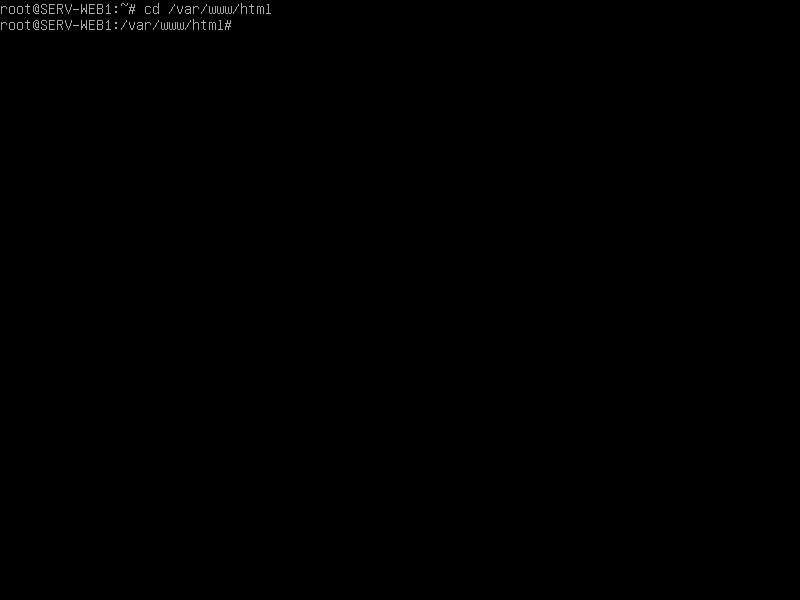
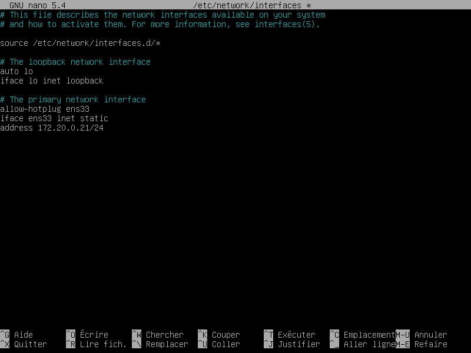
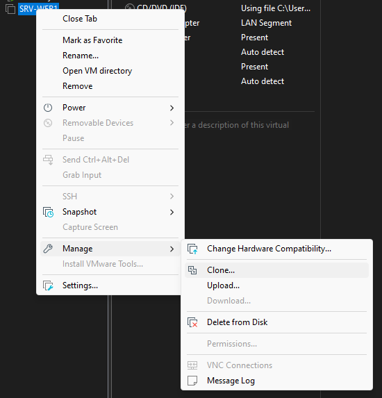

Documentation
Machine SERV-WEB1
Prérequis
- Télécharger et installer VMware (pour les Mac)
- Télécharger l'iso debian
MachineSERV-WEB1
ÉTAPE 1 : Création de la machine virtuelle
-
Sur VMware, depuis l'interface principale, cliquez sur
Create a New Virtual Machine -
Sélectionnez
Typical (recommended)puis cliquez surNext > -
Sélectionnez
I will install the operating system later.puis cliquez surNext > -
Sélectionnez
Linux, et sélectionnez la VersionDebian 10.x 64-bit,puis cliquez surNext > -
Saisissez le nom de la machine virtuelle en-dessus de
Virtual machine name:,puis cliquez surNext > -
Sélectionnez
Split virtual disk into multiple files,puis cliquez surNext >
-
Cliquez sur
Finish -
Cliquez sur
Edit virtual machine settings
-
Cliquez sur
CD/DVD (IDE)
-
Sélectionnez
Use ISO image file:, puis cliquez surBrowse...pour rechercher l'iso de Debian téléchargé. -
Cliquez sur
OKpour valider et fermer la fenêtre.
ÉTAPE 2 : Installation de Debian
-
Cliquez sur
Power on this virtual machine -
Cliquez sur l'écran et sélectionnez
Installen appuyant sur la touche Entrée du clavier. -
Sélectionnez
French - Françaiscomme langage pour l'installation. -
Sélectionnez
Francecomme choix de situation géographique. -
Sélectionnez
Françaiscomme disposition de clavier à utiliser. -
Saisissez le nom de la machine :
SERV-WEB1 -
Saisissez le mot de passe du superutilisateur :
root -
Confirmez le mot de passe.
-
Saisissez votre prénom comme nouvel utilisateur.
-
Saisissez de nouveau votre prénom pour l'identifiant du compte utilisateur. Normalement, il est déjà saisi.
-
Saisissez un mot de passe pour ce compte. Mot de passe conseillé :
root(très sécurisé) -
Confirmez ce dernier.
-
Sélectionnez
Assisté - utiliser un disque dur entier -
Sélectionnez
SCSI3 (0,0,0) (sda) - 21.5 GB VMware, VMware Virtual S -
Sélectionnez
Tout dans une seule partition (recommandé pour les débutants) -
Sélectionnez
Terminer le partitionnement et appliquer les changements -
Faut-il appliquer les changements sur les disques ?-><Oui> -
Faut-il analyser d'autres supports d'installation ?-><Non> -
Sélectionnez
Francecomme pays du miroir de l'archive Debian. -
Sélectionnez
deb.debian.orgcomme miroir de l'archive Debian. -
Souhaitez-vous participer à l'étude statistique sur l'utilisation des paquets ?-><Non> -
Décochez tous à l'aide de la touche Espace, puis la touche Entrée pour
<Continuer> -
Installer le programme de démarrage GRUB sur le disque principal ?-><Oui> -
Sélectionnez
/dev/sdacomme périphérique où sera installé le programme de démarrage GRUB. -
Sélectionnez
<Continuer>pour terminer l'installation.
SERV-WEB1!
ÉTAPE 3 : Mise en place du Cluster Web
Tips #1
Vous pouvez faire un netoyage de la console à l'aide de la commandeclear
Lancez la machine
SERV-WEB1(si ce n'ai pas fait)-
Sélectionnez
Debian GNU/Linux -
SERV-WEB1 login:->rootPassword:->root -
Installez apache2, php, wget et unzip à l'aide de la commande
aptroot@SERV-WEB1:~#apt-get updateroot@SERV-WEB1:~#apt install -y apache2 php wget unzipÀ quoi sert la commande
apt-get update?apt-getpermet d'effectuer l'installation et la désinstallation de paquets en provenance d'un dépôt APT.updatepermet de mettre à jour la liste des fichiers disponibles dans les dépôts APT présents dans le fichier de configuration/etc/apt/sources.list.Pourquoi faire un
Permet d'avoir aucune erreur lors d'une installation.apt-get update?À quoi sert le
-ydans la commandeapt install -y apache2 php wget unzip?-ypermet de répondre Oui (O) par défaut aux questions qui sont posés pendant l'installation.Et si une question importante attendait Non (N) comme réponse ?
(Réponse en cours de rédaction...) -
Accédez au dossier racine par défaut d'apache2.
root@SERV-WEB1:~#cd /var/www/html -
Téléchargez le template
thegrillà l'aide de la commandewgetroot@SERV-WEB1:/var/www/html#wget https://github.com/technext/thegrill/archive/master.zip -
Décompressez l'archive
master.zipà l'aide de la commandeunziproot@SERV-WEB1:/var/www/html#unzip master.zip -
Changez le dossier racine par défaut d'apache2 par celui de
thegrill-masterdans le fichier000-default.confPour ce faire, ouvrez le fichier
000-default.confà l'aide de la commandenanoLe fichier
000-default.confse trouve dans le répertoire/etc/apache2/sites-available/Dans le fichier, rajoutez
/thegrill-masteraprès/var/www/html->DocumentRoot /var/www/html/thegril-masterroot@SERV-WEB1:/var/www/html#nano /etc/apache2/sites-available/000-default.confEnregistrez la modification avecctrl x->O (la lettre)->Entrée -
Redémarrez le service d'apache2 à l'aide de la commande
restartroot@SERV-WEB1:/var/www/html#service apache2 restart -
Dans le fichier
thegrill-master/index.html, ajoutez respectivement 1 après le titreThe Grillroot@SERV-WEB1:/var/www/html#nano thegrill-master/index.htmlEnregistrez la modification avecctrl x->O (la lettre)->Entrée -
Quittez le répertoire
/var/www/htmlà l'aide de la commandecdroot@SERV-WEB1:/var/www/html#cd -
Modifiez la carte réseau de la machine.
Pourquoi modifier la carte réseau de la machine ?
La machine virtuelleSERV-WEB1est par défaut en NAT.
Le NAT est utilisé pour partager l'adresse IP de l'hôte.
Cette adresse IP est généré automatiquement sur l'interfaceens33. Vous pouvez vérifier à l'aide de la commandeip a.
Dans la prochaine étape, vous allez devoir attribuer une adresse IP static à cette machine virtuelle.
Et pour attribuer une adresse IP static à une lachine, il faut qu'elle appartienne à un segment LAN.
Il va donc faloir créer ce segement LAN dans les paramères de la machine virtuelle.- Faites un clique droit sur le nom de la machine en haut, et cliquez sur
Settings... - Une fois dans les paramètres de la machine virtuelle, cliquez sur
Network Adapter - À droite, cliquez sur
LAN segment:en-bas. - Plus bas, cliquez sur
LAN Segments...pour créer un segment LAN. - Cliquez sur
Add - Saisissez le nom du segement :
LAN - Cliquez sur
OKpour valider et créer ce nouveau segement. - En-dessous de
LAN segment:, cliquez et sélectionnez le segement nomméLAN - Une fois fait, cliquez sur
OKen-bas à droite pour fermer la fenêtre des paramètres de la machine virtuelle.
- Faites un clique droit sur le nom de la machine en haut, et cliquez sur
-
Modifiez le fichier
interfacessitué dans le répertoire/etc/network/Remplacez
dhcpparstaticEt rajoutez en-dessous l'adresse IP de la machine virtuelle
address 172.20.0.21/24root@SERV-WEB1:~#nano /etc/network/interfacesEnregistrez la modification avecctrl x->O (la lettre)->Entrée -
Redémarrez la machine virtuelle à l'aide de la commande
reboot(et se reconnecter).root@SERV-WEB1:~#reboot -
Vérifiez la configuration IP de la machine virtuelle à l'aide des commandes
ip aetifconfigroot@SERV-WEB1:~#ip aroot@SERV-WEB1:~#ifconfigSuccess!
L'adresse IP de la machineSERV-WEB1est bien172.20.0.21
{kind=link}
{kind=link}
{kind=link}
{kind=link}
ÉTAPE 4 : Clonage de la machine virtuelle
-
Eteignez la machine virtuelle
SERV-WEB1en cliquant sur la petite croix en haut à droite du nom de la machine.Puis cliquez sur
Power Offpour éteindre la machine. -
À gauche, cliquez sur le nom de la machine virtuelle
SERV-WEB1 -
Une fois cliquer, faites un clique droit dessus et allez dans
Manage, et cliquez surClone... -
Cliquez sur
Suivant > -
Sélectionnez
The current state in the virtual machine, puis cliquez surSuivant > -
Sélectionnez
Create a full clone, puis cliquez surSuivant > -
Saisissez le nom de la nouvelle machine virtuelle :
SERV-WEB2, puis cliquez surTerminer -
Cliquez sur
Close